Element Handles and Tooltips
Angle Center
The angle center is the axis around which an element rotates in Runtime or Test mode. The angle center is determined by the Angle Center X and Angle Center Y coordinates in the Layout properties of the Properties view.
When no values are set for the angle center, the angle center  is not visible on the canvas.
is not visible on the canvas.
Cornering Radius Handles
The rectangle element has a pair of cornering radius handles attached to it. These handles allow you to curve the corners of the rectangle element. The rectangle element below shows the corner radius handles in the top, left corner of the element. These handles control the rounding of all four corners simultaneously.
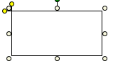
Element Handles
Element Handles | ||
Icon | Name | Function |
| Angle Center | The axis around which an element rotates. All elements--. |
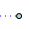 | Bezier Handle | Changes the curvature of a Bezier shape: - Cubic Bezier handle 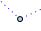 - Quadratic Bezier handlePath Element |
| Branch Handle | Pipe Element Marks the beginning of a branch. |
| Connection Handle | Pipe Element: Marks the point where two segments merge. |
| Cornering Radius Handle | Rounds the corners of a rectangle element. |
Coupling Selector | Pipe Coupling element Only: Allows you to select from one of the five coupling types:
| |
| Midpoint Handle | Pipe Element: Marks the center of two segments and allows you to create a branch. |
| Mid-Segment Handle | Each path segment has a start and an end handle, by moving the mid-segment handle you are moving both the start and end handles of that segment. |
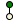 | Rotational Handle | Rotates the element. |
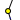 | Segment Handle | Separates two segments of a path or a pipe. |
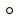 | Sizing Handle | Allows you to select an elements on the canvas and click-and-drag to resize the selected elements. Each element is surrounded by eight selection handles. |
| Vertex Handle | In a pipe element, marks the center of a bend in a segment/section and allows you to change the direction of the angle in the bend. |


Rotational Handles
All elements have the green rotational handle attached to a center selection handle. The rotational handle is displayed at the top of the polygon element below.
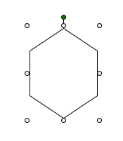
Pipe Element Tooltips
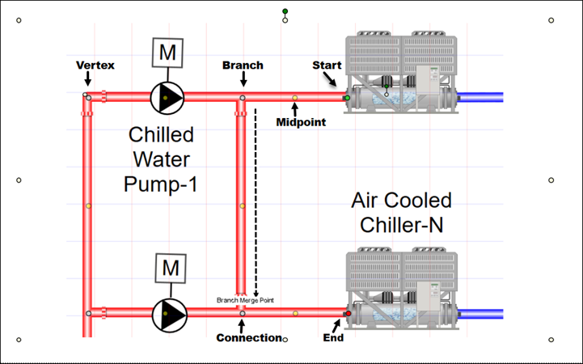
The following tooltips display on the canvas when you hover over a Pipe element handle.
Start (Click + Drag)
Extend or move the start of a pipe segment.
- Extend No Bend (CTRL + E + Drag)
Extend the segment without a bend. - Extend Restricted Angle (Snap Enabled + Drag)
Extend the segment with a restricted 45o/90o angle.
*Access Snap checkbox from the ribbon > View tab. Uncheck to disable. - Select End Type (Right-Click + Select a Type)
Select a segment Start type. - Merge (CTRL + Q + Click + Drag + Release at Merge Location)
Merge with another segment or pipe element. - Move (CTRL + W + Click Handle) + [Release All] + (Move with Arrow Keys)
Disable Snap. Activate edit pixel-by-pixel mode and move handle with arrow keys.
Press ESC to exit.
End (Click + Drag)
Extend or move the end of a pipe segment.
- Extend No Bend (CTRL + E + Drag)
Extend the segment without a bend. - Extend Restricted Angle (Snap Enabled + Drag)
Extend the segment with a restricted 45o/90o angle.
Access Snap checkbox from the ribbon > View tab. Uncheck to disable. - Select End Type (Right-Click + Select a Type)
Select a segment end style. - Merge (CTRL + Q + Click + Drag + Release at Merge Location)
Merge with another segment or Pipe element. - Move (CTRL + W + Click Handle) + [Release All] + (Move with Arrow Keys)
Disable Snap. Activate edit pixel-by-pixel mode and move handle with arrow keys.
Press ESC to exit
Midpoint (Click + Drag)
Draw a branch off a segment of a Pipe element.
- Extend No Bend (CTRL + E + Drag)
Extend the segment without a bend. - Extend Restricted Angle (Snap Enabled + Drag)
Extend the segment with a restricted 45o/90o angle.
*Access Snap checkbox from the ribbon > View tab. Uncheck to disable. - Merge (CTRL + Q + Click + Drag + Release at Merge Location)
Merge with another segment or Pipe element. - Move (CTRL + W + Click Handle) + [Release All] + (Move with Arrow Keys)
Disable Snap. Activate edit pixel-by-pixel mode and move handle with arrow keys.
Press ESC to exit.
Branch (Click + Drag)
Slide the handle along the Pipe segment.
*Disable Snap for Slide and Move. Access View tab and uncheck to disable.
- Slide Restricted Angle (CTRL + E + Drag)
Slide handle without changing branch angle. - Move (CTRL + W + Click Handle) + [Release All] + (Move with Arrow Keys)
Disable Snap. Activate edit pixel-by-pixel mode and move handle with arrow keys.
Press ESC to exit - Disconnect branch (Right-Click + Select Disconnect)
Disconnect the branch end from a segment.
Connection (Click + Drag)
Slide the handle along the Pipe segment.
*Disable Snap for Slide and Move. Access View tab and uncheck to disable.
- Move (CTRL + W + Click Handle) + [Release All] + (Move with Arrow Keys)
Disable Snap. Activate edit pixel-by-pixel mode and move handle with arrow keys.
Press ESC to exit - Disconnect branch (Right-Click + Select Disconnect)
Disconnect the branch end from a segment.
Vertex (Click + Drag)
Extend or move the vertex of a Pipe segment bend.
- Extend Restricted Angle (Snap + Enabled)
Extend the segment with a restricted 45o/90o angle.
*Access Snap checkbox from the ribbon > View tab. Uncheck to disable. - Move (CTRL + W + Click Handle) + [Release All] + (Move with Arrow Keys)
Disable Snap. Activate edit pixel-by-pixel mode and move handle with arrow keys.
Press ESC to exit
Selection and Resizing Handles
All elements are surrounded by eight white selection and resizing handles: one in each corner and an intermediate handle between the corners. When the selection handles display, the elements are considered active. You can also click and drag each handle until the required size is reached. The ellipse element shows the eight selection and resizing handles. The top center selection handle is attached to the green rotational handle.
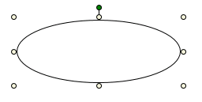
Start and End Handles
Any element drawn on the canvas that has an open path has at least one Start  and End
and End  handle attached to it.
handle attached to it.
This includes the following elements:
 Line
Line
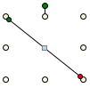
 Path
Path
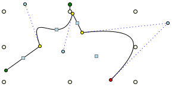
 Pipe
Pipe
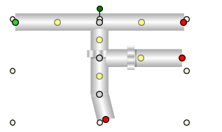